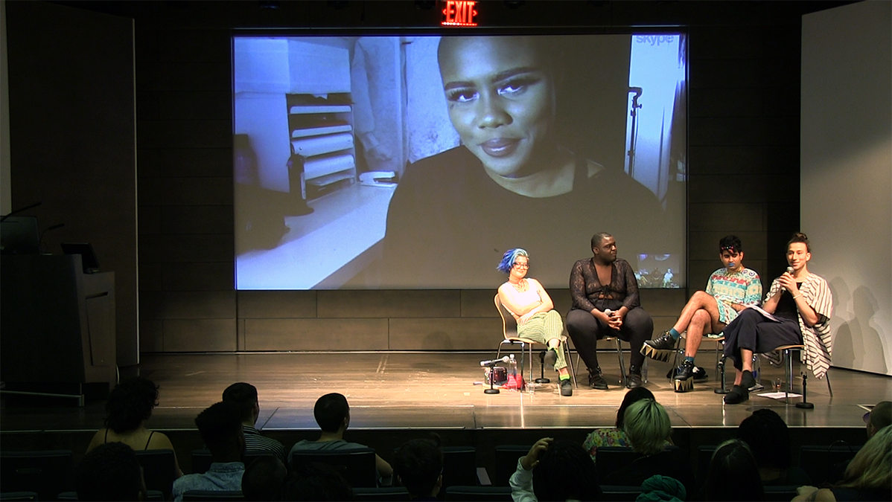

STRIKE The Pose
What do we do about fashion? The fashion industry today is governed by excess, unsustainability, and inaccessibility. While the industry continues to exploit creative capital from oppressed communities, the face of fashion remains white, thin, cis, and able-bodied. In this panel we question fashion’s turn toward queer and trans models and aesthetics. What does it mean for fashion to notice us? Is this positive representation or incorporation, or both? What role can fashion play in the furthering of our own political imaginations? And what influence do networked platforms offer in reconsidering the economic hierarchies we associate with aesthetic production? Together we explore how creatives navigate style—in all of its manufacturing, distribution, and reception—in this fashion climate of simultaneous hyper visibility and hyper inequality.
This was a panel I organized and moderated at The Cooper Union Rose Auditorium on August 23rd. Panelists include Sarah Nicole Francois, Jamal T. Lewis, Arabelle Sicardi, and Alok Vaid-Menon. I also designed the poster.

